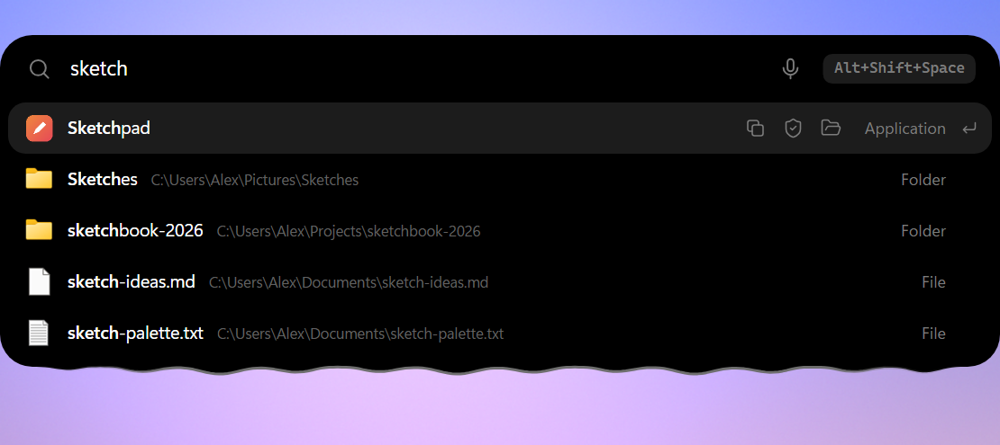
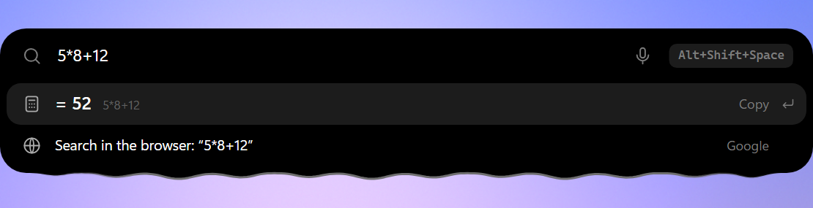
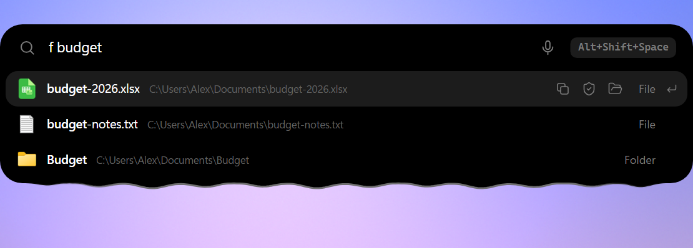

A small dynamic island for the top of a Windows screen: music, clock, notifications and what your tools are doing, growing into a panel when you need more. Небольшой «остров» в верхней части экрана Windows: музыка, часы, уведомления и то, что делают ваши инструменты; раскрывается в панель, когда нужно больше.
Download for WindowsСкачать для WindowsWindows 10/11 · x64 · free, MIT · network features off by defaultWindows 10/11 · x64 · бесплатно, MIT · сетевые функции выключены по умолчанию

A liquid edge that reacts to music, notifications and recordings, with pets and characters beside it. Жидкий край реагирует на музыку, уведомления и запись; рядом могут жить питомцы и персонажи.
Text, images and files, with search, pinning, paste as plain text and a "wipe everything" button. Skips password managers and secret-looking text by default. Текст, картинки и файлы: поиск, закрепление, вставка простым текстом и кнопка «стереть всё». Менеджеры паролей и похожий на секрет текст по умолчанию пропускаются.
Finds applications, files and folders with their real icons, calculates, converts and runs commands. Uses Everything for file search when installed. Ищет приложения, файлы и папки с настоящими значками, считает, конвертирует и запускает команды. Если установлен Everything, ищет файлы через него.
Notes, reminders and a timer, weather, a shelf for files, quick system controls and a launcher. Заметки, напоминания и таймер, погода, полка для файлов, быстрые системные настройки и лаунчер.
Chat with local models (Ollama, LM Studio, llama.cpp, FreeLLMAPI) or a cloud provider. Voice to text with any OpenAI-compatible Whisper endpoint, local or cloud. Чат с локальными моделями (Ollama, LM Studio, llama.cpp, FreeLLMAPI) или облачным провайдером. Голос в текст через любой Whisper-совместимый с OpenAI сервер, локальный или облачный.
Screen capture, OCR, colour picker and QR reader. Shows the status of coding agents (hooks for Claude Code). Захват экрана, OCR, пипетка и чтение QR. Показывает статус агентов для кода (хуки для Claude Code).
Opens with Alt+Shift+Space and hangs just under the island instead of covering it.Открывается по Alt+Shift+Space и висит под островом, а не закрывает его.


Network features are off by default. Nothing is sent anywhere until you switch a feature on (weather, AI, voice).Сетевые функции выключены по умолчанию. Ничего никуда не отправляется, пока вы сами не включите функцию (погода, ИИ, голос).
The one exception is the update check: about 20 seconds after launch Pill asks GitHub whether a newer release exists. It only checks; installing is always your click, and you can turn it off in Settings, Updates, Check on start. The microphone is used only while you dictate; clipboard history stays on your machine.Единственное исключение: проверка обновлений. Примерно через 20 секунд после запуска Pill спрашивает у GitHub, есть ли новый релиз. Это только проверка, устанавливаете вы всегда сами; отключается в Настройках, Обновления, «Проверять при запуске». Микрофон работает только пока вы диктуете; история буфера остаётся на вашем компьютере.
Pill_<version>_x64-setup.exe from the latest release and run it.Скачайте Pill_<версия>_x64-setup.exe из последнего релиза и запустите.RequirementsТребования
Built with Tauri v2 (Rust) and plain HTML/CSS/JS. winget: not available yet.Сделан на Tauri v2 (Rust) и обычных HTML/CSS/JS. winget: пока недоступен.